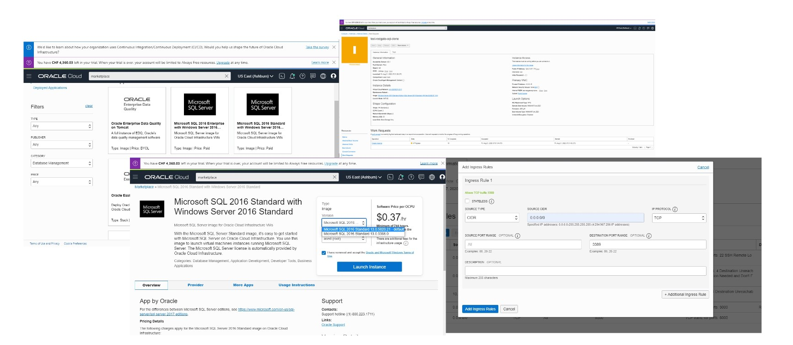
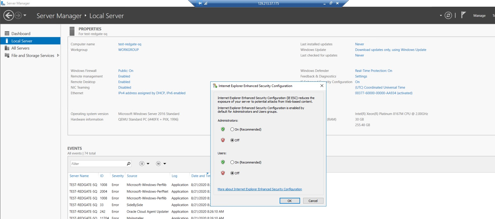
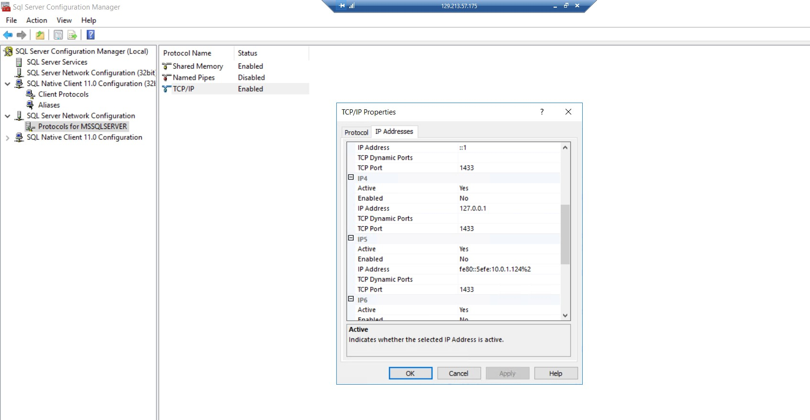
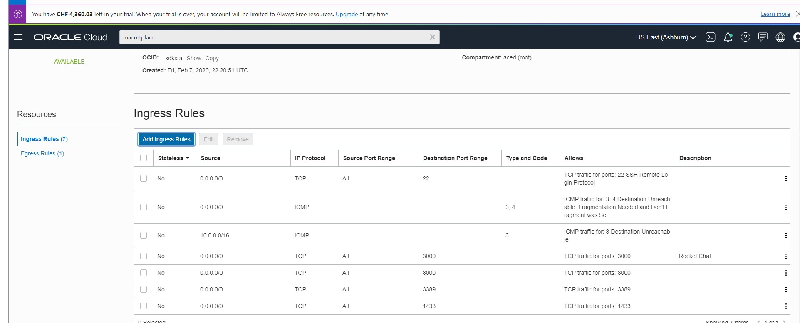
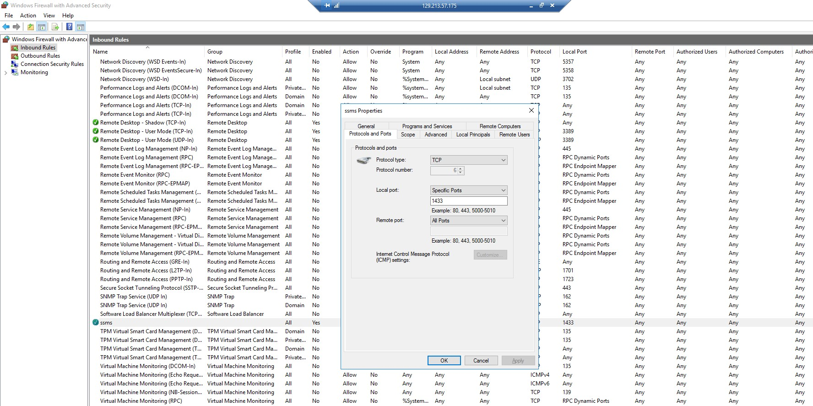
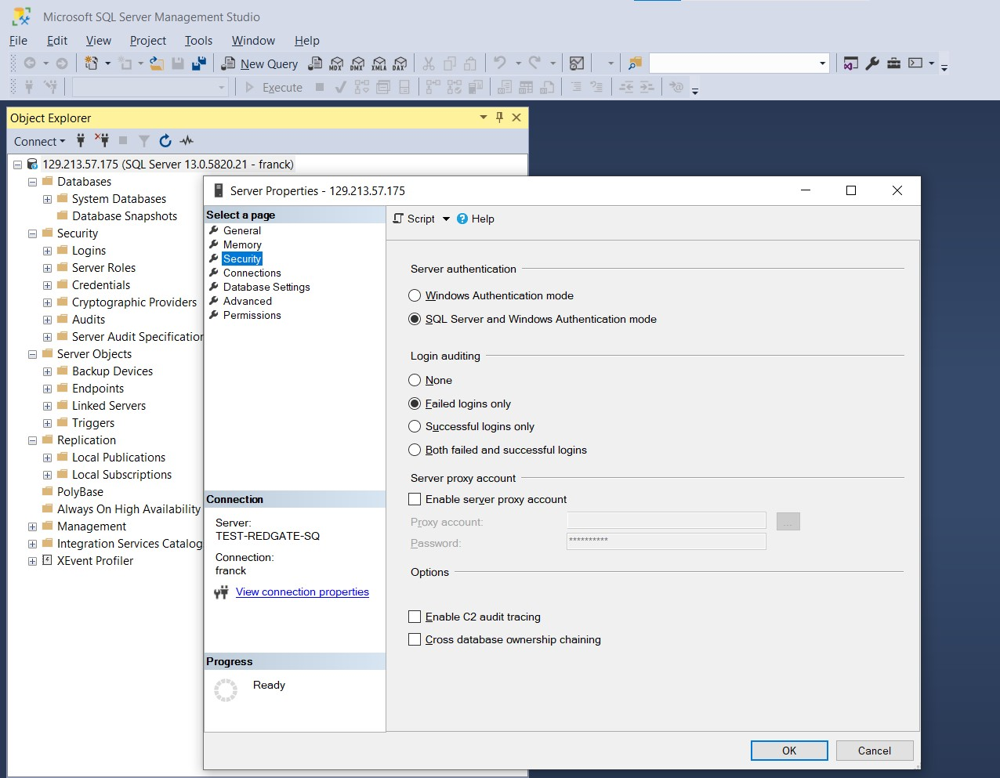
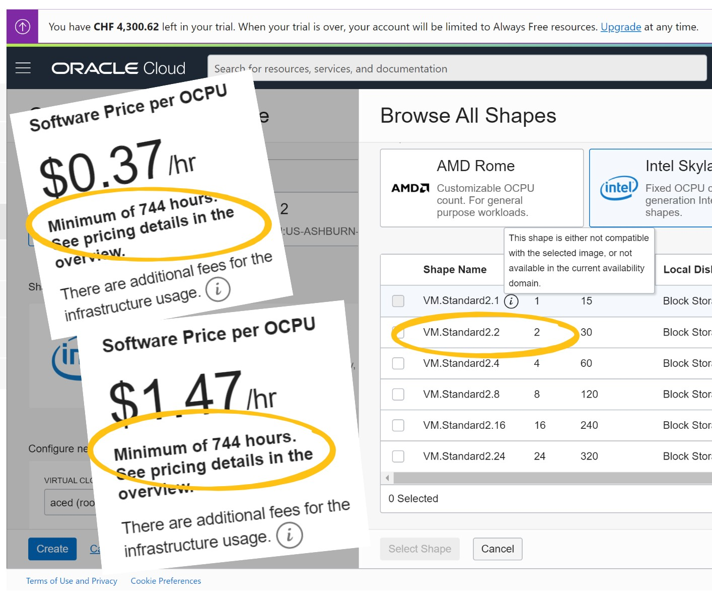

This was first published on https://www.dbi-services.com/blog/sql-server-on-oracle-cloud/ (2020-08-24)
Republishing here for new followers. The content is related to the versions available at the publication date.
. 
You can create a VM with SQL Server running in the Oracle Cloud. This is easy with a few clicks on the marketplace:
Here are the steps I did above:
This is fast but don’t be as impatient as I am, the password is displayed after a while:
If your create a Windows machine in the @OracleCloud, just be patient. The initial password will come… pic.twitter.com/lxtaFRmXBb
— Franck Pachot (@FranckPachot) August 21, 2020
After a few minutes, you have the user (opc) and password (mine was ‘BNG8lsxsD6jrD’) that you will have to change at the first connection. This user will allow you to connect with Remote Desktop. This means that you have to open the 3389 TCP port:
Once this port is opened in the ingress rules, you can connect with Remote Desktop and access the machine as the user OPC which is a local administrator. You can install anything there.
There’s something that quickly annoys me when I want to install something there – Internet Explorer and its “enhanced security configuration”. I disable this and take my responsibility for what I want to download there: 
SSMS – the SQL Server Management Studio is not installed on the server. You have the command line with “sqlcmd” and the SQL Server Configuration manager where you can verify that the TCP access to the database is enabled and on the default port 1433: 
I’ve the SSMS installed on my laptop and as I’ve created this VM on the public subnet, I open the ingress TCP port 1433:  
But that’s not sufficient because the installation from the marketplace does not open this port. You need to open it in the windows firewall:
And… one more thing… the installation from the marketplace allows only Windows Authentication to the database but, if you don’t share a domain, you can’t connect remotely with this.
I’ve created a user:
Microsoft Windows [Version 10.0.14393]
(c) 2016 Microsoft Corporation. All rights reserved.
C:\Windows\system32>sqlcmd
create login franck with password='Test-dbi-2020';
alter server role sysadmin add member franck;
go
Then, in order to connect with a SQL Server user I had to enable SQL Server authentication: 
You may wonder how I enabled it without having SSM first? I’ve read https://docs.microsoft.com/en-us/sql/database-engine/configure-windows/change-server-authentication-mode?view=sql-server-ver15 that mentions:
EXEC xp_instance_regwrite N'HKEY_LOCAL_MACHINE',N'Software\Microsoft\MSSQLServer\MSSQLServer',N'LoginMode', REG_DWORD, 2
GO
to run on SQLCMD.
But I thought I was more clever, ran regedit.exe and changed HKEY_LOCAL_MACHINE\SOFTWARE\Microsoft\MSSQLServer\MSSQLServer to add a ‘LoginMode’ key. But it didn’t work. I finally realized that the registry key is: HKEY_LOCAL_MACHINE\SOFTWARE\Microsoft\Microsoft SQL Server\MSSQL13.MSSQLSERVER\MSSQLServer.
This is a very subtle difference, isn’t it? Ok, now I admit it: I installed SSMS on the cloud VM before finding this 😉 And defined the mixed mode from there (don’t forget to run SSMS as admin…)
Ok, now that the 1433 port is opened on both the windows firewall and the subnet rules, and I have a user created on SQL Server, and I have enabled SQL Server authentication, I can connect from my laptop SSMS.
That’s all for the moment. I have a SQL Server operational on the Oracle Cloud. You may have seen that my instance is called TEST-REDGATE-SQL-CLONE and then you can guess what the next blog post is about…

– The minimum shape available is a 2 OCPU one
– If you stop the instance before 744 hours of usage (1 month) you still pay for 744 hours
This means that the minimal instance I’ve created to write this post will cost: 0.37 * 2 * 744 = $550 even if I terminate the instance now. No worry, I have some credits thanks to the ACE program.
I must admit that I didn’t expect that for a VM. Upfront costs are common for bare metal, or if they are a counterpart for huge discount. I usually trash and re-create an instance to test my blog post before publishing it, to be sure I didn’t miss a step. And that’s what cloud is good at, right? But given the upfront cost, I’ll not. Another instance would add another $550 to the bill.
Here is my estimated bill from one hour taken from the Cost Explorer (2 OCPU for the compute, 256 GB block storage for the boot volume):
| product/service | product/ Description | cost/ unitPrice | cost/ skuUnitDescription | cost/ myCost | cost/ currencyCode | Monthly (744 hours) |
|---|---|---|---|---|---|---|
| COMPUTE | Virtual Machine Standard – X7 | 0.0643 | OCPU Hours | 0.1286 | CHF | 95.6784 |
| COMPUTE | Windows OS | 0.0205 | OCPU Hours | 0.041 | CHF | 30.504 |
| COMPUTE | Microsoft SQL Standard | 0.3727 | OCPU Hours | 0.7454 | CHF | 554.5776 |
| NETWORK | Outbound Data Transfer | 0 | GB Months | 0 | CHF | 0 |
| BLOCK_STORAGE | Block Volume – Performance Units | 0.0017 | GB Months | 0.005849462 | CHF | 0.4352 |
| BLOCK_STORAGE | Block Volume – Storage | 0.0257 | GB Months | 0.008843011 | CHF | 6.5792 |
When I shut down the machine, only the following show up: Outbound Data Transfer (0 GB), Block Volume – Performance Units, Block Volume – Storage (256 GB), Virtual Machine Standard – X7 (2 OCPU). I’ll tell you when I terminate the service how those 744 hours minimum for “Microsoft SQL Standard” will show up.
{kind=link}
{kind=link}
{kind=link}
{kind=link}
{kind=link}
{kind=link}
{kind=link}